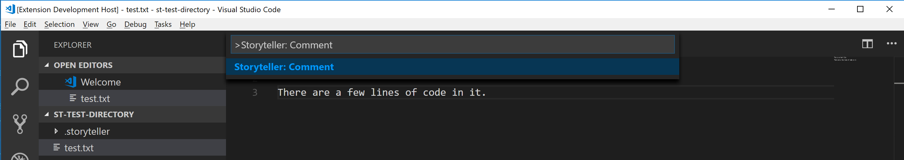

Storyteller: Docs
Making a Comment
While viewing a playback, a comment can be added by pausing and adding text, an image, or a video recording. The comment will be stored at the pause point. Future playbacks will pause on the comment and it will be displayed.
Starting a Playback

Starting at the beginning
To start a playback from VS Code open the command pallette (ctrl/cmd + shift + p) and type in "Storyteller: Start Playback".
A browser window will open with a playback at the beginning of the project's history.
A developer can review the project's history and add comments to it. The comments will be stored permanently and will be displayed in future playbacks.
Tip: A playback can also be started from the browser when VS Code is open by navigating to
http://localhost:3000/playback directly in the address bar. Alternatively, if a playback is already open in the browser
a simple refresh will reload the playback.
Starting at the end

To make it easier to add a comment about the latest changes a playback can be started at the end of the project's history by opening the command pallette and typing in "Storyteller: Comment". The code in the playback starts in the same state as it is in the editor so the developer does not have to move the playback to the end in order to comment on the latest changes.
Tip: Sometimes it makes sense to wait until a feature is complete before commenting on it. However, many times it is best to comment while the code is being written. This option gives the developer flexibilty to quickly add comments as they are writing code.
Adding text

A text description of the code can be added at a pause point in the text area in the "Text for the Comment" section.
Clicking the "Add Comment" button adds a comment at the pause point.
Highlighting code
The author of the playback can highlight one or more sections of code in the playback window to go along with the comment. This makes it easy to direct the viewer to the code that is being described. The selected code will be highlighted when the comment is displayed.
Tip: More than one block of code from the playback
window can be selected as long as the author hits the ctrl button while selecting
multiple sections.
Drawing pictures

Clicking the "Add a picture" button will bring up the picture modal. The playback author can draw a picture or add a saved picture like a screenshot. The picture will be displayed as part of the comment in the playback.
After drawing a picture or adding a screenshot the playback author must hit the "Use this image" button to add the picture to the comment. A preview of the comment pictures will be displayed in the user interface. Multiple pictures can be added for a single comment.
All previous comment pictures can be used as the starting point for a new drawing. They are available to select at the bottom of the modal. This makes it easy to build a picture over time along with the code that is being built.
There is a basic drawing pallette for hand drawing images.
Saving screenshots
A stored picture can be added in one of three ways. If the picure is stored on the file system a file chooser dialog is activated with the "Browse for an image" button. The user can select the picture and it will be added to the drawing window.
An image can be dragged from a file explorer into the drawing window.
If there is an image on the clipboard a paste operation will add it to the drawing window. This is useful because many screen snipping tools add an image to the clipboard.
Tip: A playback author can draw on a screenshot to highlight something or to add more information to it.
Making a video
A computer with a web cam can be used to add video comments. By default, capturing video is not enabled. It has to be explicitly enabled in the user interface by clicking the "Enable video comments" checkbox. The browser may ask for permission to begin using the camera.
Once video recording has been enabled a preview window will show what the camera is capturing. The playback author can hit the "Start Recording" button to begin recording. Once the author is done recording the "Stop Recording" button will end the recording.
After a video has been made a preview of the video is shown. The author can replay the video before saving it. If the author wishes, they can delete the video and try again. More than one video can be added to a comment.